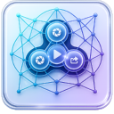

Server stopped
Add a folder, then switch this on.

Share folders with any phone or laptop on this Wi-Fi — they open a link in a browser, nothing to install. Other computers running LAN Share show up further down; connect to as many as you like, and what each one shares appears under Devices.